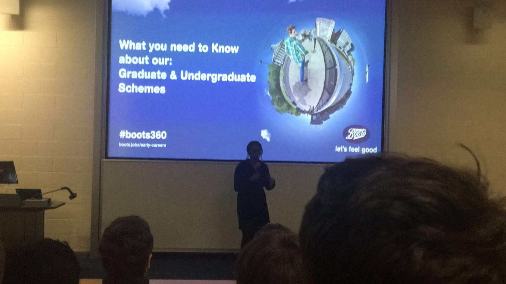

Company visits
Company visits are essential for me as my degree is a sandwich degree so it is important for me to attend as many company visits events as I can. This is so I can make links and contacts with businesses that would be interested in employing me for when I am looking for a placement for my third year.The total amount of hours counted towards my continued personal development for company visits is 4 hours.
Clifton job and placement fair
Future Hub- Clifton jobs fair.There is a placement fair on the 8/11/18 where many employers will be looking to give students opportunities for placements for their studies. The employers who will be at the fair are United Technologies, Rolls Royce, North Yorkshire Police and Catalent. The invitation to the placement fair was emailed to all science and technology students but further information was provided through the future hub website, the link to that website is under the heading above. I spent 2 hours at the job fair learning about all the different job opportunities there were for my placement year so I found it extremely helpful because I made a lot of links and contacts with different businesses. All three photos below were taken from the Clifton job and placement fair that I visited on the 8/11/18, the main company that I was interested in that was at the job fair was 'd3t a keywords studio' a photo of their stand and the job fair is the first photo on the left.
Silicon Valley visit
 Silicon Valley is the home of all things technological, it is the breeding ground for many start companies in the technological field. The most popular well known companies known from Silicon Valley are Google, Facebook and Apple. Nigel King came to talk to us about Silicon Valley all the way from California! Nigel was originally a finance grad however he got into computer when finance and computers clashed together. Nigel learned how to code rather than find an engineer to help him which would've took lot of time. Nigel started off by selling and distributing the AS400. Nigel had previously worked in Germany preselling the JDEwards system and from then on he went to redwood shores which eventually led him to Silicon Valley. When he was at Silicon Valley he joined oracle in 1994, which was six years before it was popularised by the Y2K which encouraged people to switch from 2 digit name field to 4 so this triggered people to change their system to Oracles. Silicon valley was predominately built by universities and is growing because of Stanford universities input into it as its so close, because of this many generations are being replicated to feed into Silicon Valley.
Silicon Valley is the home of all things technological, it is the breeding ground for many start companies in the technological field. The most popular well known companies known from Silicon Valley are Google, Facebook and Apple. Nigel King came to talk to us about Silicon Valley all the way from California! Nigel was originally a finance grad however he got into computer when finance and computers clashed together. Nigel learned how to code rather than find an engineer to help him which would've took lot of time. Nigel started off by selling and distributing the AS400. Nigel had previously worked in Germany preselling the JDEwards system and from then on he went to redwood shores which eventually led him to Silicon Valley. When he was at Silicon Valley he joined oracle in 1994, which was six years before it was popularised by the Y2K which encouraged people to switch from 2 digit name field to 4 so this triggered people to change their system to Oracles. Silicon valley was predominately built by universities and is growing because of Stanford universities input into it as its so close, because of this many generations are being replicated to feed into Silicon Valley.
Boots visit
Boots visited on the 14/11/18 for 30 minutes. The representative from boots who spoke to us today was called Donna Browne. Her presentation was very structured and detailed, she spoke about the benefits of working with or for boots but also what type of jobs are available for interns and graduates. Boots sounds very appealing because theres so many sectors within Boots that you can work with depending on your interest and skills. Boots originally started in Nottingham in 1849. Donna has been working with Boots for a very long time she said there is three reasons why she enjoys working for Boots for so long which is the benefits, business and personal growth and relationships and friendships within in Boots that she has made.
Bloc Digital visit
Keith from Bloc Digital visited on the 14/11/18 for 30 minutes. Keith told us that Bloc Digital was created when him and a friend left Rolls Royce to start up their own business in 2000. Since then there is now two offices and 40 people. Bloc digital hire one new person every week to further grow their business. Bloc digital are mostly hired out by other companies to digitalise their plans or creations, for example Rolls Royce use Bloc Digital to create a virtual format of their machinery or engine to send to clients so that they can use the virtual technology to learn how to use the machinery rather than spending 150,000 pounds on shipping the actual machinery to them. Bloc Digital are looking for creators and developers to work for them creating and expanding the virtual reality world.